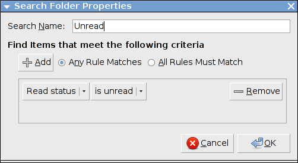

| Prev | Searching and Search Folders | Next |
Liferea supports a simple case sensitive text searching in the item content and titles of all your subscriptions.
To open the search dialog click the search button in the toolbar. Enter the string you want to search for and click the "Search" button. Any items containing the string either in their title or their content should appear in the resulting item list. Also the item content view will give you a message about the number of matches.
If you want to have permanent searches (e.g. all items containing the term "XML") you can create a search folder which will be added to your feed list and contains all items matching this search rule. To do so enter your search term into the search box and click the search button. After the results appear click the "Search Folder" button to create a search folder from the search results. Now a search folder should appear in your feed list. If you want you can edit the search folders title or change its rules by opening the properties dialog either from the "Subscriptions" menu or the contextual menu in the feed list.

The following table is a list of all possible search folder rules and their specific meaning.
| Item does contain | Adds each item whose title or content matches the given case insensitive string to the search folder. |
| Item does not contain | Removes each item whose title or content matches the given case insensitive string from the search folder. |
| Item title does contain | Adds each item whose item title matches the given case insensitive string to the search folder. |
| Item title does not contain | Removes each item whose item title matches the given case insensitive string from the search folder. |
| Item body does contain | Adds each item whose item content matches the given case insensitive string to the search folder. |
| Item body does not contain | Removes each item whose item body matches the given case insensitive string from the search folder. |
| Feed title does contain | Adds each item whose parent feed's title matches the given case insensitive string to the search folder. |
| Feed title does not contain | Removes each item whose parent feed's title matches the given case insensitive string from the search folder. |
| Read status is unread | Adds each unread item to the search folder. |
| Read status is read | Removes each unread item from the search folder. |
| Flag status is flagged | Adds each flagged item to the search folder. |
| Flag status is unflagged | Removes each flagged item from the search folder. |
| Podcast included | Adds all items that contain an enclosure to the search search folder. |
| Podcast not included | Removes all items that do not contain an enclosure from the search folder. |
Please note that the order of the rules does not matter. An additive rule after a removal rule that does match an item that is to be removed because of to the removal rule will not add this item!
| Prev | Contents | Next |